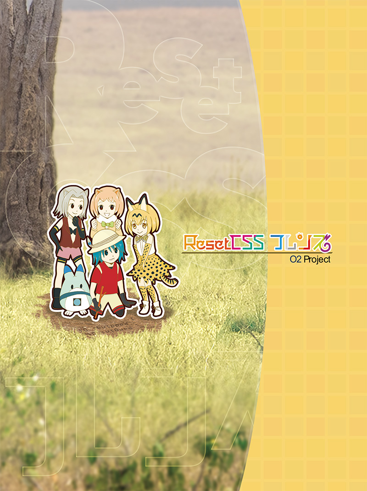

O2 Project in 技術書典2

Reset CSSフレンズ
Reset CSSについてくわしくかいたほんだよー！
| ページ数 | 32ページ |
|---|---|
| 頒布価格 | 600円 |
| 表紙デザイン | kino |
| イラスト | tomo_e |
| 著者 | kubosho_ |
| 内容 |
本書はReset CSSについて4つの視点から説明する本です。
|
| 目次 |
|
| 頒布スペース | 技術書典2 あ-04 |